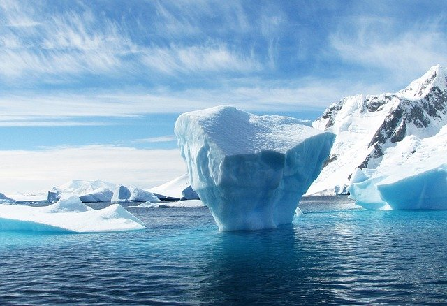

Антарктида
 Географическое расположение территории Антарктиды описывалось задолго до ее научного подтверждения как материка. Всемирно известные морепроходцы М. П. Лазарев и Ф. Ф. Беллинсгаузен, совершив очередную экспедицию, первыми заговорили о ее существовании. Однако этот огромный участок земли лишь в середине ХХ века был признан материком. Антарктида – материк южного полярного района. В нем сосредоточены те представители растительного и животного миров, которые смогли приспособиться к необыкновенно суровому климату самой южной части света. Это место принято считать пустыней огромных размеров, где нет часового пояса. Главные составляющие Антарктиды – водное пространство, снежный покров, лед и скалистая поверхность. Низкое расположение солнца связано с его расположением за Южным полярным кругом. С ней соседствуют Индийский, Атлантический и Тихий океаны. Основная характеристика климатических условий Антарктического материка – частый ураганный ветер, отсутствие облачности, низкая температура воздуха (зарегистрирована самая низкая – 89, 3 С). Своеобразны и летний, зимний периоды. В теплые месяца, когда наступает полярный день, температура может достигать – 20 С, зимой – в полярную ночь - в среднем – 50 С. Источником вечной мерзлоты на южном материке является ледяной покров. Именно в нем сосредоточено 80 % пресной воды нашей планеты. Удивляет его рельефное разнообразие – это равнинные участи и купола изо льда. Благодаря ему Антарктида считается самым высоким материком.